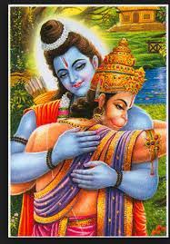

Kishkindha Kanda describes Rama's sojourn in Kishkindha, the search for Sita, and the killing of Vali
Kishkindha (also known as Kishkindhya), was the kingdom of the Vanara King Sugriva, the younger brother of Vali, in the Ramayana.
This was the kingdom where he ruled with the assistance of his minister, Hanuman.
... Hence this kingdom was considered to be the kingdom of Vanaras which in Sanskrit means Forest Dwellers..